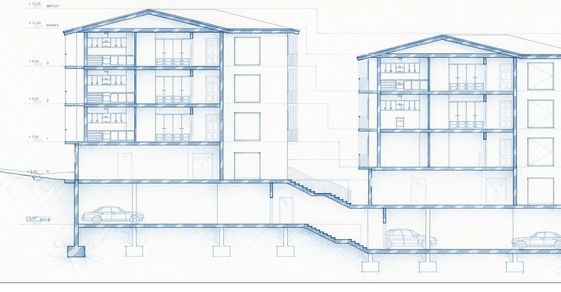
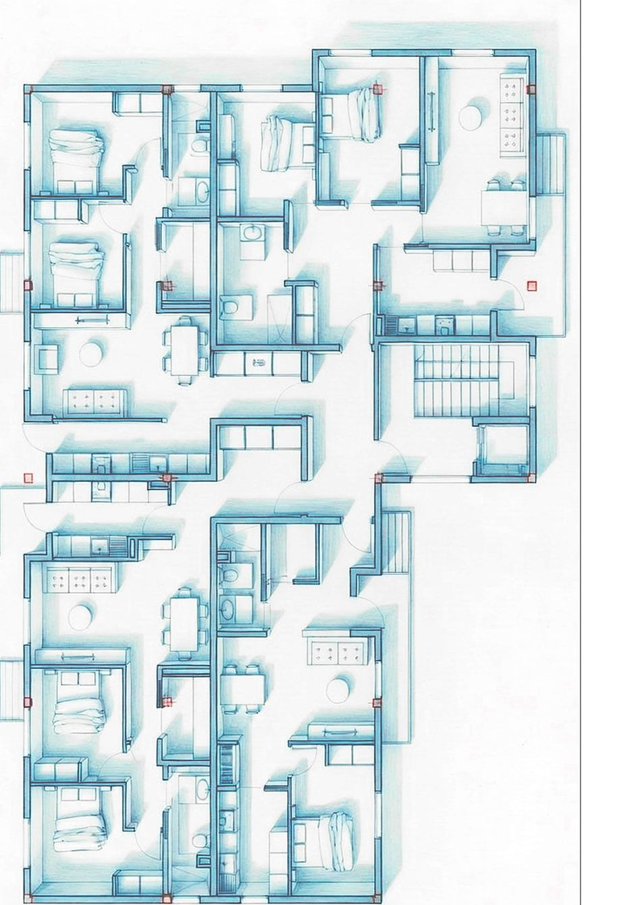

Proyecto académico · Máster en Vivienda Pública
24 viviendas VPO · Floreaga, Ordizia
Dos bloques en L sobre la pendiente que regalan al barrio un espacio comunitario interior.

UbicaciónFloreaga, Ordizia (Gipuzkoa)
Año2022 – 2023
Programa24 viviendas de protección oficial, espacio comunitario y aparcamiento
RolProyecto residencial completo · Máster en Vivienda Pública
El proyecto
La parcela, en fuerte pendiente, ordena el proyecto: dos bloques en L con perfil 0+3 se apoyan en el terreno y generan entre ellos un espacio comunitario interior, corazón de la propuesta. El aparcamiento se resuelve en sótano accediendo desde la cota trasera.
Las tipologías parten de tres criterios de la vivienda pública bien hecha: ventilación cruzada, orientación y accesibilidad. La construcción combina hormigón prefabricado y madera.
Qué hice
- Implantación, tipologías y ficha de superficies del conjunto.
- En VISESA, además: seguimiento ambiental de obras Next Generation, certificación energética, residuos y circularidad con IHOBE.
- Bases de datos de control de obra y relación con Alokabide.
ArchiCADAutoCADLumionOffice
Acceso y materialidad

La vivienda sobre la pendiente


